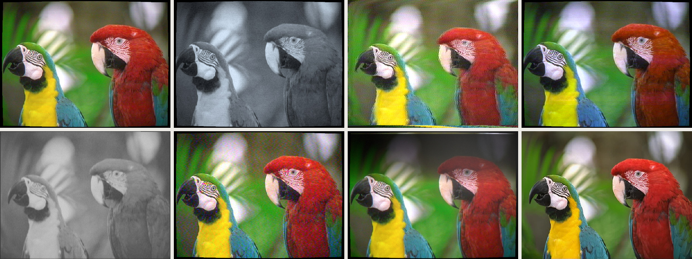

10
videolook
Television and video looks from Baird's 30 lines to DV: 405-line to PAL, NTSC and SECAM, Soviet, Japanese and pre-war systems, long-distance reception, tube cameras, Quad to VHS, discs, teletext and CRT sets.

about
The companion to FilmLook for television. It does not paint a look on: it turns the photo into a real video signal at the standard's own resolution (575 lines of about 922 samples for PAL, sampled at four times the colour subcarrier), passes it through a camera, a transmission channel, a tape machine and any transfer, then decodes it with the chosen receiver, so cross-colour, dot crawl, NTSC hue errors, PAL desaturation, Hanover bars and SECAM streaks come out of the maths as they did in reality. A display stage then rebuilds the picture at document size with scan lines, shadow mask or aperture grille, glow and tube geometry, or as a clean frame-grab, or as a photograph of the screen. The numbers come from the standards themselves (ITU-R BT.470, the UK System I specification, FCC and SMPTE documents) and from BBC engineering sources: the 1964 BBC camera comparisons, the 1967 registration report, BBC training sheets on camera processing, tape and colour-under recording, receivers and the 1967 standards converter. Settings whose defaults are estimates are marked est. on the panel. Version 1.1 adds the receiving set as a stage of its own: a set built for another country's system (French System L comes out as a rolling negative on a UK set), co-channel interference from a second picture, overload, and the set's sync, so pictures tear and roll for real reasons. It also adds Soviet, East German, Japanese, Brazilian and Argentine systems, Hi-Vision, the pre-war systems (Baird 30 and 240 lines, Berlin and NBC 441, Moscow 343), CBS colour-wheel TV, Apollo 11, slow-scan TV, Pixelvision, CCTV, LaserDisc, CED, Canal+ scrambling and teletext. Version 1.2 adds the off-screen photograph as a proper stage: a shutter that catches one field or a whole frame, a black-and-white negative and print, flare, soft dust and the tube surround, together with two faults of older sets that turn dark captions grey (mean-level AGC and no DC restorer). The result goes on a new layer; the photo is untouched.
- app
- photoshop
- type
- uxp panel
- built by
- claude
- state
- working
- version
- 1.2.1
- requires
- Photoshop 24.2+, RGB, 8 or 16-bit
- plugin id
- com.simonmorse.videolook
- looks
- 84 (10 built from specifications alone)
- folder
- VideoLook-Photoshop-Plugin
quick start
- 01Open Plugins › VideoLook and choose a look. The note under the list says what the chain is and what it rests on.
- 02Draw a marquee and press Preview selection to see just that area. The whole frame still goes through the signal chain, so the preview is exact.
- 03Press Render. The look goes on a new VideoLook · layer at the top; Strength is that layer's opacity.
- 04Adjust any stage below and press Re-render last. Tick boxes on the section headers switch whole stages on and off. Save combinations under My presets.
controls
top of panel
- Look84 looks in 14 groups
- UK broadcast, US broadcast, France, Home video, Archive and transfers, Long-distance reception, USSR and Eastern Europe, Japan, Early television, Space, surveillance and toys, South America, Community TV and video art, Photographed off the screen, Subtitles. Choosing a look sets every stage and ticks the ones it uses.
- Strength0 – 100
- Opacity of the result layer; updates the last render live.
- SourceWhole image / Selected layer
- Whole image hides earlier VideoLook layers while it reads.
- OutputNew layer / New document
- A layer at document size, or a new document at the standard's own size in square pixels (767×575 for PAL, 647×485 for NTSC).
- FrameMatte / Crop canvas
- The picture is 4:3 (5:4 for early 405-line, 16:9 for Hi-Vision, 1.15:1 for Berlin 441, 1:1 for slow-scan, 3:7 tall for Baird 30-line); the rest of the document is black, or the canvas is cropped to it.
- Shift image X / Ypixels
- Moves the photo inside the picture: + X right, + Y down.
- Implied motionpixels per field, degrees
- A still has no movement; this supplies it. It brings out interlace combing, tube lag and comet tails, 3:2 pulldown and converter double images. Only the selection moves makes the selection the moving subject.
- New noise
- New random seed for noise, dropouts and grain.
camera
- Camera / pickup11 types
- Emitron, CPS Emitron, image orthicon (B&W and 3-tube colour), vidicon, 3-tube Plumbicon, 1964 four-tube, EMI 2001, Saticon camcorder, broadcast 3-CCD, consumer 1-CCD, DV 3-CCD, intermediate film (Baird / Fernseh), Apollo lunar camera, PXL-2000, CCTV and Portapak. Each sets the controls below.
- Exposure−2 – +2.5 stops
- Pushes highlights into the tube's knee or the CCD's clip.
- Softness0 – 1.5% of the width
- Blurs the picture before it is scanned, like a caption camera slightly out of focus. Because it is in the camera, the set's scan lines stay crisp over a soft picture, which is how 1960s off-screen photographs of captions look.
- Edge sharpening0 – 1.5
- BBC-style contour correction: 3-tap, from green, added equally to R, G and B so the halos are neutral; off in the darks. The amount is an estimate.
- Signal-to-noise20 – 60 dB
- Camera noise, rising with frequency on photoconductive tubes.
- Lag / Comet tails
- Trails behind moving bright objects (needs implied motion).
- Image-orthicon halo
- Dark ring round bright objects. Its size is an estimate.
- Red / Blue registration−150 – +150 ns
- Colour tubes out of register. The BBC's 1967 tolerance was 25 ns for 3-tube cameras (0.05% of the width) and 50 ns for a 4-tube camera's colour tubes.
standard & colour
- Television standard26 systems
- 625 PAL (UK I, Europe B/G/H), 525 NTSC (US, Japan), SECAM (France L, USSR D/K, East Germany B/G), PAL-M, PAL-N, 405-line, 819-line (France E, Belgium F), 625 and 525 black and white, Soviet 625 and 343, Berlin and NBC 441, Baird 240 and 30, CBS field-sequential colour, Apollo 320, slow-scan 120, Hi-Vision MUSE, component 625/525.
- Picture shape4:3 / 5:4 / 16:9
- 5:4 was 405-line's shape until April 1950.
- NTSC colour codingI/Q or equal-band
- FCC I/Q, or SMPTE 170M equal-band.
channel
- RouteStudio / Aerial / Satellite FM / D-MAC
- Satellite FM is Sky on Astra (PAL over FM, sparklies on a weak dish); D-MAC is BSB (no subcarrier, so no cross-colour).
- Signal-to-noise10 – 60 dB
- Snow. The US TASO grades: 44 excellent, 34 fine, 27 passable, 23 marginal, 17 inferior.
- Ghostdelay, strength, type
- Multipath echo: 1 µs is about 2% of the picture width; positive, inverted or edge-like depending on its RF phase.
- Interference spots
- Impulse noise: white spots on 405, 819 and French L, dark on the others.
- Co-channel stationstrength, offset, position
- A second station on the same channel (long-distance reception): it shows through with its own sync bars, striped by the few-kHz carrier offset. The second picture is the photo mirrored, or a layer named second picture.
- ScramblingNone / Discret 11
- Canal+ from 1984: each line delayed by 0, 0.9 or 1.8 µs at random.
recording
- Format24 formats
- 2-inch Quad (high and low band), 1-inch B and C, U-matic (LB, HB, SP), Betacam, Betacam SP, MII, VHS (SP, LP, EP), S-VHS, Betamax, Video8, Hi8, V2000, Philips VCR, D1, Digital Betacam, D2/D3, DV, DVCPRO.
- RecordedAt the studio / At home
- Studio tape goes before transmission; a home recording is made of the received, noisy signal.
- Copy generations1 – 5
- Each copy adds tape noise and smear again.
- Timebase wobble, Dropouts, Head-switch lines, Tracking error
- Domestic machine faults. The amounts are estimates.
- Quad head banding
- Per-head bands every 16 lines, with colour errors growing across the picture.
transfer
- Conversion generations1 - 12
- Repeat the conversion, each copy made from the last: with Optical and the same target standard, a picture re-shot off a monitor again and again.
- Standards conversionOptical / BBC 1967 / Digital / Motion-compensated
- Re-codes to the target standard. The BBC 1967 field store blends one field in five and insets the picture in a black border.
- TelerecordingSuppressed field / Stored field / US kinescope
- Video filmed off a monitor: fewer lines, film grain, ~40:1 range. The result is the film.
- TelecineClean / 3:2 mixed frame
- Flying-spot film scanner in place of the camera. Run FilmLook first for the film stock.
- Tape played on another systemPAL-60 / NTSC 4.43 / SECAM on PAL
- American tapes on UK machines, and SECAM on a PAL-only set (black and white with dots).
decoder & set
- Luma/colour separationNotch, low-pass, comb, none
- A notch gives cross-colour on fine detail; a comb removes it on still pictures; none is a black-and-white set, which shows the subcarrier as dots.
- PAL decoderDelay line / Simple
- All British sets had the delay line by 1970, so phase errors only reduce saturation; simple PAL shows Hanover bars.
- Phase error / Differential phasedegrees
- NTSC hue errors ("Never The Same Colour"); the PAL equivalent is lost saturation.
- Set controls
- Sharpness, contrast, brightness, colour, overscan.
- Set built forsame / UK / Dutch-German / French / Soviet
- A set for another system gets that system's carrier levels wrong: French System L shows as a negative on a UK set, with no colour, and loses sync; other sound carriers leave patterning.
- Vertical hold, Roll position, Horizontal hold, Line lock
- The set's own timebases: a sync separator, a flywheel line oscillator and a field oscillator. A clean signal locks and is unchanged; a wrong or weak one tears and rolls. The loop figures are estimates.
- Overload (lockout)0 – 1
- Too strong a signal: sync crushed, picture partly negative.
- Mean-level AGC0 – 1
- Early 405-line sets (and French 819 and System L sets) set their gain from the average signal, so a mostly black picture was turned up until it was grey and its whites over-driven. Gated AGC from the mid-1950s cured it. Only acts on those systems. The amount is an estimate.
- Black follows the picture0 – 1
- A set with no DC restorer holds the picture's average at a fixed brightness, not its black: dark pictures go grey, bright ones go too dark. Works on any system. The amount is an estimate.
- Black-level tilt0 – 1
- Makes that follow the picture down the screen: the level drops at a white caption and creeps back over the next field, leaving a grey band above the caption and black below it. Fitted to one 1968 off-screen photograph; the cause isn't established.
display & view
- TubeB&W / Delta-gun / Slot mask / Trinitron / colour wheel / P7
- The phosphor pattern, sized from the screen size. P7 is the radar tube used for slow-scan TV: a blue flash, then a yellow-green afterglow.
- Phosphors, White point, Tube gammaEBU / SMPTE C / 1953 / Japanese; D65 / 9300 K / 9300 K + 27 MPCD
- US sets often ran at 9300 K and Japanese sets at 9300 K + 27 MPCD; no UK figure was found, so D65 is the default.
- Round tube face
- For round tubes: the KVN-49 and radar tubes.
- Mask, Scan lines, Blooming, Glow, Curvature, Corners
- Mask and scan lines draw only where the image has enough pixels, and fade out rather than making moiré on small images.
- ViewFrame-grab / Screen close-up / Photo of the screen / Magnifying lens / Televisor
- The lens is the KVN-49's water-filled magnifier; the Televisor is Baird's neon lamp and spinning disc.
- Photo exposure0 – 2 fields
- How long the shutter was open, in fields (1/50 s each in the UK). 2 is a whole frame (1/25 s, the usual rule, and John Cura's Tele-snap setting); 1 catches one field, so only every other line shows (about 188 on 405 lines); between 1 and 2 part of the screen gets both; below 1 only a band is bright. 0 is a long exposure. Scan position at the click moves the band.
- Photo softness, Glass and lens flare, Room reflection
- The camera's focus, light scattered in the faceplate and lens (it lifts the blacks near bright areas), and a window reflected in the glass.
- Pull back, Camera tilt0 – 0.3; −6 – +6°
- Shows the dark surround of the tube and a camera not held square.
- Photo finishAs seen / Black-and-white print
- Black-and-white print puts the photo through a negative and a print. Print exposure (stops) sets how light it is: lower it and the screen's whites turn grey and milky; raise it and they burn out. Print contrast is the paper grade; Print black is how deep the print's black goes.
- Photo grain0 – 1.5
- Film grain. New noise moves it.
- Dust (amount), Dust brightness0 – 1.5; 0 – 3
- The dust of a small negative enlarged: small, soft, mostly faint specks, a few of them dark, modelled on those measured in 1960s off-screen stills. Amount 0.15–0.2 is about their density and brightness 1 their strength; the looks use 0.15 or 0.2. No hairs or scratches. New noise moves the specks.
overlay
- Subtitles12 styles
- Typeset with your installed fonts (a temporary text layer, read and deleted), then burned in where they belonged: on the film print (chemically etched with ragged letters, or laser-etched with a thin dark halo), at the studio (BBC slab serif with a black edge or on a grey label, Arial italic with a soft shadow, VHS release, Dutch TV, Channel 4, DVD 4-colour bitmap, early black box), or by the set (US Line 21 closed captions). The BBC's own face, TKST, isn't available: Rockwell stands in. Font, italic, size, colour, edge, position (bottom, middle for titles, or top) and case can all be changed.
- OverlayTeletext / Date-time stamp
- Teletext is drawn by the set after the decoder: mixed over the picture, as a full page, or as boxed subtitles. The stamp is burned in before recording, so the tape softens it.
- Load font list, Filter families, Font family, Font style
- Press Load font list once per session to fetch your installed fonts from Photoshop (it isn't read at start-up, so it can't hold up other panels). Type part of a name in Filter families to narrow the list, then pick the family and style. Leave the family on the style's own font to use the style's list.
- or PostScript name
- Type a PostScript name instead (e.g.
Arial-ItalicMT), or several separated by commas, used in order of preference. Font Book shows it in each font's info panel. - Text
- Colours with {red} {green} {yellow} {blue} {magenta} {cyan} {white}, double height with {dh}, boxes with {box}...{/box}; 40 characters a line. The font is VideoLook's own.
workflow
film on television
For 1970s drama exteriors or any film shown on TV, render the FilmLook stock first, then apply VideoLook's telecine look to the result.
long-distance reception
Summer lift, French TV on a UK set, Sporadic-E: pick the look, then move Co-channel strength, Roll position and Horizontal hold, and press New noise for another moment. For a real second station, add a layer named second picture.
off-screen photographs
For a 1960s station symbol or caption as it survives in off-screen photographs: start with white artwork on black, choose a look from Photographed off the screen, then move Print exposure (grey and ghostly, or burnt out), Softness under Camera, and Mean-level AGC and Black follows the picture under Decoder & set. See the Look Cookbook.
evidence
Ten looks (Alexandra Palace 1937, 405-line at home, US live 1950, French 819-line, Moscow 343, Baird 240, Berlin and NBC 441, CBS colour, Belgian 819) are built from the specifications alone, because no authentic pictures survive. The rest are research-based and can be calibrated against reference frames.
gotchas
- Large documents take a while: a 24-megapixel render with a CRT view is roughly 10–20 seconds. Preview selection is quicker.
- A Photo of the screen is made from the whole picture (flare, grain, dust, tilt), so its previews take as long as a full render, and a one-field photo draws the screen twice.
- The photo is treated as sRGB; convert documents in other profiles first.
- A still cannot show movement: the 60-field 'video look' of US sitcoms, dot crawl moving and interlace flicker are not there. Implied motion shows what a single frame of movement would look like.
- 32-bit documents are not supported.
- Hi-Vision has no camera stage (HD cameras aren't modelled) and needs Implied motion with 'Only the selection moves' to show its motion blur.
looks
uk broadcast
- BBC Alexandra Palace, 1937from the specifications · Emitron / iconoscope → 405-line (UK, B&W) → 12in black-and-white tube
- 405 lines, 5:4 picture, Emitron camera, seen on a pre-war set. No live pictures survive, so this is built from the standards; the set's size and phosphor colour are estimates.
- 405-line live studio at home, 1953from the specifications · CPS Emitron → 405-line (UK, B&W) → 14in black-and-white tube
- BBC 405-line picture on a 14in set: 3 MHz, 377 lines, visible scan lines. Live pictures only survive on film, so the as-broadcast look is built from the standards.
- 405-line telerecording, 1953research-based · Emitron / iconoscope → 405-line (UK, B&W) → suppressed-field telerecording → frame-grab
- How surviving 1950s BBC television looks (e.g. The Quatermass Experiment): suppressed-field film recording keeps 188.5 lines, with spot wobble, film grain and a ~40:1 range.
- BBC2 625-line monochrome, 1964research-based · Image orthicon (B&W) → 625-line B&W → 19in black-and-white tube
- 625 lines, 5.5 MHz, on a 19in set. The BBC2 camera fleet was not found; an image orthicon is assumed.
- UK colour studio, mid-1970sresearch-based · EMI 2001 four-tube Plumbicon → 2-inch Quad, high band → 625 PAL (UK System I) → 22in delta-gun set
- EMI 2001 four-tube Plumbicon camera, 2-inch Quad, PAL System I, on a 22in delta-gun set with the PAL delay line all British sets had.
- UK colour outside broadcast, early 1970sresearch-based · 3-tube Plumbicon → 2-inch Quad, high band → 625 PAL (UK System I) → 22in delta-gun set
- 3-tube Plumbicon OB camera on Quad. OB picture traits are not documented; the camera settings are the studio ones.
- 1970s drama: 16 mm film exteriorsresearch-based · flying-spot telecine → 625 PAL (UK System I) → 22in delta-gun set
- Film shot on location, through a Rank Cintel flying-spot telecine. Run FilmLook first for the 16 mm stock, then this.
- 1970s drama: studio video interiorsresearch-based · EMI 2001 four-tube Plumbicon → 2-inch Quad, high band → 625 PAL (UK System I) → 22in delta-gun set
- The other half of the film-and-video mix: EMI 2001 cameras on Quad, as Doctor Who's studio scenes were made.
- Colour show on B&W film (with PAL dots)research-based · EMI 2001 four-tube Plumbicon → 625 PAL (UK System I) → stored-field telerecording → frame-grab
- A colour programme kept only as a 16 mm black-and-white telerecording for overseas sales; the unfiltered PAL subcarrier leaves fine dots in coloured areas (the basis of BBC colour recovery). Dots show best on large documents.
- News on U-matic, 1983research-based · 3-tube Plumbicon → U-matic high band → 625 PAL (UK System I) → 20in slot-mask set
- Tube ENG camera on high-band U-matic, edited and broadcast; the BBC's colour-under figures set the U-matic colour.
- News on Betacam SP, 1989research-based · 3-CCD broadcast → Betacam SP → 625 PAL (UK System I) → 21in slot-mask set
- CCD camera on Betacam SP (component, ~4.5 MHz luma, 1.5 MHz colour).
- Sky on Astra, 1990research-based · 3-CCD broadcast → 625 PAL (UK System I) → 21in slot-mask set
- Analogue PAL over an FM satellite link, so all PAL artefacts remain; sparklies appear on a weak dish. Satellite noise amounts are estimates.
- BSB D-MAC, 1990research-based · 3-CCD broadcast → 625 PAL (UK System I) → 21in slot-mask set
- BSB's D-MAC: no subcarrier, so no cross-colour or dot crawl; sharper colour across, half the colour detail down. Bandwidths estimated from the compression ratios.
- Teletext page mixed over the picture, 1983research-based · EMI 2001 four-tube Plumbicon → teletext mix → 625 PAL (UK System I) → 22in slot-mask set
- The set's teletext decoder writing a page over the programme ('mix'): 24 rows of 40 characters on the 6 MHz dot clock, rounded characters, eight colours. The font is VideoLook's own; the page text is invented and editable under Overlay.
- Teletext subtitles, 1985research-based · EMI 2001 four-tube Plumbicon → teletext subtitle → 625 PAL (UK System I) → 22in slot-mask set
- Page 888-style subtitles: double-height text in black boxes, white first then yellow, cyan and green for other speakers. Text invented and editable under Overlay.
us broadcast
- US live TV, 1950from the specifications · Image orthicon (B&W) → 525-line B&W → 17in black-and-white tube
- 525-line monochrome from an image orthicon (dark halo round highlights), 4.2 MHz, on a 17in set. Live pictures survive mainly as kinescopes.
- US kinescope, 1952research-based · Image orthicon (B&W) → 525-line B&W → kinescope → frame-grab
- 525/60 filmed at 24 fps; a drifting shutter leaves a brighter band. 16 mm grain and ~40:1 range.
- Early RCA colour, 1958research-based · 3-tube image orthicon colour (Marconi/RCA) → 2-inch Quad, high band → 525 NTSC (US) → 21in delta-gun set
- 3-tube image orthicon colour camera, NTSC with the 1953 primaries on a delta-gun set; equal-band colour decoding.
- US network sitcom, 1975research-based · 3-tube Plumbicon → 2-inch Quad, high band → 525 NTSC (US) → 19in slot-mask set
- Multi-camera Plumbicon studio on Quad, NTSC, on a slot-mask set at 9300 K. Its famous 'video look' is mostly 60-field motion, which a still cannot show.
- US local news, 1985research-based · 3-tube Plumbicon → U-matic high band → 525 NTSC (US) → 19in slot-mask set
- Tube ENG camera on U-matic, NTSC over the air.
france
- French 819-line TV, 1960from the specifications · Image orthicon (B&W) → 819-line (France, B&W) → 17in black-and-white tube
- RTF 819 lines, 10 MHz: the sharpest broadcast standard before HD. Camera type not found; an image orthicon is assumed.
- ORTF SECAM colour, 1975research-based · 3-tube Plumbicon → 625 SECAM (France L) → 22in delta-gun set
- SECAM L: FM colour on alternate lines (half the colour detail down, streaks on colour edges). Studios often worked in PAL or component and coded SECAM for transmission.
home video
- VHS off-air recording, 1986 (UK)research-based · 3-tube Plumbicon → VHS (SP) off-air → 625 PAL (UK System I) → frame-grab
- A broadcast recorded on a home VHS at SP from an aerial with a faint ghost, as a frame-grab.
- VHS third-generation copyresearch-based · 3-tube Plumbicon → VHS (LP) off-air → 625 PAL (UK System I) → frame-grab
- An off-air LP recording copied twice more: noise, smear and wobble build up with each generation.
- VHS off-air recording, 1988 (US)research-based · 3-tube Plumbicon → VHS (SP) off-air → 525 NTSC (US) → frame-grab
- NTSC VHS SP off-air, frame-grab.
- Betamax off-air, 1981research-based · 3-tube Plumbicon → Betamax off-air → 625 PAL (UK System I) → frame-grab
- Betamax recording of a broadcast. Betamax figures are estimates.
- Tube camcorder, 1984research-based · Saticon tube camcorder → VHS (SP) → 625 PAL (UK System I) → frame-grab
- Single Saticon tube (lag, orange-red flare, soft colour) recording to VHS-C.
- Video8 camcorder, 1988research-based · Single-CCD consumer camcorder → Video8 → 625 PAL (UK System I) → frame-grab
- Single-CCD consumer camcorder on Video8 (vertical smear on highlights).
- Hi8 camcorder, 1994research-based · Single-CCD consumer camcorder → Hi8 → 625 PAL (UK System I) → frame-grab
- Sharper Hi8 luma, same narrow colour.
- S-VHS camcorder, 1992research-based · Single-CCD consumer camcorder → S-VHS → 625 PAL (UK System I) → frame-grab
- S-VHS: sharp luma, VHS colour.
- MiniDV, 2002 (PAL)research-based · DV 3-CCD → DV / DVCAM (PAL 4:2:0) → Component 625 (studio/digital) → frame-grab
- 3-CCD DV camcorder: 4:2:0 colour, 8×8 DCT blocks and mosquito noise at 25 Mbit/s, hard highlight clip.
- MiniDV, 2002 (NTSC)research-based · DV 3-CCD → DV (NTSC 4:1:1) → Component 525 (studio/digital) → frame-grab
- NTSC DV: 4:1:1 colour (only 180 colour samples across).
- LaserDisc (PAL, CLV crosstalk), 1990research-based · flying-spot telecine → LaserDisc (CLV) → 625 PAL (UK System I) → 25in Trinitron
- A film on a long-play (CLV) LaserDisc: full broadcast detail on an optical disc, but crosstalk from the neighbouring track drifts through as bands of fine noise ('barber poles'). Crosstalk form and amount [EST].
- LaserDisc with laser rotresearch-based · flying-spot telecine → LaserDisc with laser rot → 625 PAL (UK System I) → frame-grab
- An oxidised disc: sparkling specks, some coloured, some dark, scattered over the picture. Density [EST].
- RCA CED videodisc, worn (1983)research-based · flying-spot telecine → RCA CED videodisc (worn) → 525 NTSC (US) → 19in slot-mask set
- RCA's grooved capacitance disc: 3 MHz of detail, narrow colour, and dust and wear ('video virus') giving dropouts and snow. How the colour was carried isn't confirmed; modelled as a narrow colour band.
archive and transfers
- US show on the BBC, 1970research-based · 3-tube Plumbicon → 2-inch Quad, high band → 525 NTSC (US) → BBC 1967 converter to 625 PAL → 22in delta-gun set
- NTSC converted to PAL by the BBC's 1967 field-store converter: picture inset with black borders; with implied motion, one field in five is a double image.
- UK show on US TV, 1985research-based · EMI 2001 four-tube Plumbicon → 625 PAL (UK System I) → digital converter to 525 NTSC → 19in slot-mask set
- PAL converted to NTSC by a digital four-field converter.
- Optical standards conversion, 1962research-based · 3-tube image orthicon colour (Marconi/RCA) → 525 NTSC (US) → optical conversion to 625 PAL → frame-grab
- A camera pointed at a monitor: the source scan lines beat against the new ones.
- NTSC tape on a UK VCR (PAL-60)research-based · 3-tube Plumbicon → VHS (SP) → 525 NTSC (US) → played as PAL-60 → 21in slot-mask set
- An American VHS played on a UK machine that outputs PAL-60: correct colour, but only 480 lines, so the line structure is coarser.
- NTSC 4.43 on a PAL-only setresearch-based · 3-tube Plumbicon → VHS (SP) → 525 NTSC (US) → played as NTSC 4.43 → frame-grab
- NTSC colour on the PAL subcarrier has no V switch, so a PAL set's delay line cancels half the colour: reds turn dark.
- SECAM tape on a PAL-only setresearch-based · 3-tube Plumbicon → 625 SECAM (France L) → SECAM on a PAL-only set → 21in slot-mask set
- No SECAM decoder: black and white, with the FM subcarrier showing as a dot pattern even on greys.
- US film telecine with 3:2 pulldownresearch-based · flying-spot telecine → 525 NTSC (US) → frame-grab
- Film on NTSC: two frames in five mix two film frames. Set Implied motion to see the combing.
- Photo of the TV screen, 1978research-based · EMI 2001 four-tube Plumbicon → 2-inch Quad, high band → 625 PAL (UK System I) → 22in slot-mask set, photographed
- A UK colour broadcast photographed off a slot-mask set at 1/125 s: the exposure catches only part of the scan, so a band is brighter.
long-distance reception
- Summer lift: Dutch TV on a UK set, 1983research-based · 3-tube Plumbicon → 625 PAL (Europe B/G/H) → co-channel interference → received on a UK set (System I PAL) → 22in slot-mask set
- Nederland 1 or 2 (Goes, Lopik) across the North Sea under a summer high. Dutch System G PAL: full colour, no sound on a UK set, and the 5.5 MHz Dutch sound carrier leaves fine patterning. A weak co-channel station floats underneath, striped by the carrier offset. The mechanisms are documented; the amounts (signal level, interference) are yours to set. For a real second picture, name a layer 'second picture'.
- Belgian RTBF on a UK set, 1984research-based · 3-tube Plumbicon → 625 PAL (Europe B/G/H) → received on a UK set (System I PAL) → 22in slot-mask set
- RTBF 1 or Télé 2 on a good lift: Belgian PAL (System H on UHF, 5.5 MHz sound), so colour but silence on a UK set, with faint sound-carrier patterning. Signal level [EST].
- French TV (TF1, Antenne 2) on a UK set, 1983research-based · 3-tube Plumbicon → 625 SECAM (France L) → received on a UK set (System I PAL) → 22in slot-mask set
- France's System L puts the picture on the carrier the other way up (positive modulation), so a UK set shows a negative; its SECAM colour is lost; and the set can't find the French sync, so the picture tears sideways and rolls, with the blanking showing as white bars. Built from the ITU levels and receiver behaviour; no off-screen photos checked. New noise gives another moment; Vertical hold 'rolling' and Roll position move the bar.
- Canal+ without a decoder, 1984research-based · 3-CCD broadcast → 625 SECAM (France L) → Discret 11 scrambling → 22in slot-mask set
- Canal+ (from 4 Nov 1984) scrambled with Discret 11: every line delayed by 0, 0.9 or 1.8 µs at random, black filling the gap. Shown on a French SECAM set. The delays are documented; the pseudo-random sequence here is VideoLook's own.
- Sporadic-E on Band I, DXer's portable, 1978research-based · 3-tube Plumbicon → 625 PAL (Europe B/G/H) → co-channel interference → 12in black-and-white tube
- A distant continental Band I station by Sporadic-E (May to September, 500-1,400 miles) on a black-and-white portable: snow, a long echo, and a second station on the same channel sliding across. Mechanisms from Bunney (1981); all amounts [EST].
- Overloaded set near a transmitter (lockout)research-based · EMI 2001 four-tube Plumbicon → 625 PAL (UK System I) → overloaded set → 22in slot-mask set
- Too much signal: the set's IF stage overloads and the sync tips are crushed below the picture: 'lockout, i.e. negative picture and buzz' (Television, July 1976). One source; the overload curve is [EST].
ussr and eastern europe
- Moscow 343-line, 1938from the specifications · Emitron / iconoscope → 343-line (Moscow 1938) → 12in black-and-white tube
- 343 lines at 25 frames on RCA equipment (from 1938; dates conflict). Bandwidth 3.29 MHz and negative modulation are RCA's figures from a single source; an iconoscope camera is assumed.
- Soviet 625-line on a KVN-49 with its water lens, 1950research-based · Emitron / iconoscope → 625-line B&W (USSR, 6 MHz) → 7in black-and-white tube through its lens
- The Soviet Union's own 625-line standard (the one Europe adopted), 6 MHz, on the KVN-49: a 140 x 105 mm picture on an 18 cm round tube, seen through the add-on lens filled with water or glycerine (about 4x). The lens's distortion, fringing and reflection are [EST]; the studio camera is not researched (an iconoscope is assumed).
- Soviet colour on a Rubin set, late 1970sresearch-based · 3-tube Plumbicon → 625 SECAM (USSR/East D/K) → 24in delta-gun set
- SECAM on System D/K from 1 Oct 1967: the same colour coding as France but the ordinary negative modulation, so interference makes dark spots. Soviet tube phosphors per GOST 26799-85 are the EBU set. Camera assumed.
- East German SECAM colour, 1975research-based · 3-tube Plumbicon → 625 SECAM (East Germany B/G) → 22in delta-gun set
- DFF colour from 1969: SECAM on System B/G (5 MHz), until the switch to PAL at the end of 1991. East German set phosphors not found; EBU assumed.
japan
- Japanese NTSC on a 9300 K set, 1985research-based · 3-tube Plumbicon → 525 NTSC (Japan, no set-up) → 21in Trinitron
- NTSC-J: black sits at blanking (no 7.5% set-up), and receivers were set to 9300 K + 27 MPCD, a cool, slightly green white (x 0.281, y 0.311). Receiver phosphors from a 1979 Matsushita patent. Many real sets measured nearer 8500-8800 K.
- Hi-Vision (MUSE) analogue HD, 1991research-based · 1125-line Hi-Vision MUSE → 36in Trinitron
- NHK's 1125-line analogue HD by satellite (1989-2007). Still pictures keep ~598 lines of detail, but anything moving drops to about a quarter: set Implied motion and tick 'Only the selection moves' to see it (camera pans stay sharp). No camera stage: HD cameras aren't modelled.
- Sony CV-2000 home video, 1966research-based · Vidicon → Sony CV-2000 home VTR (B&W, skip-field) → 525-line B&W → 11in black-and-white tube
- One of the first home video recorders: half-inch tape, black and white, recording only one field and showing it twice (skip-field), about 220 lines. With a vidicon camera.
- Sony Portapak video art, 1970research-based · Portapak vidicon → EIAJ-1 Portapak (1/2 in reel, B&W) → 625-line B&W → 12in black-and-white tube
- EIAJ-1 half-inch reel recorder and vidicon camera (needed about 50 foot-candles): black and white, laggy, noisy, with 'flagging' at the top on replay. European (625) version.
early television
- Baird 30-line on a Televisor, 1933research-based · 30-line Baird (1929-35) → Televisor
- The BBC's 30-line service (to 1935): 30 vertical lines, 12.5 pictures a second, a tall 3:7 picture sent on a medium-wave channel (~10 kHz), seen as an orange neon glow through a spinning disc, 'about the size of a postage stamp'. Off-air recordings survive at tvdawn.com for comparison.
- Baird 240-line intermediate film, 1936from the specifications · Intermediate film → 240-line Baird (1936-37) → 12in black-and-white tube
- Alexandra Palace, Nov 1936-Feb 1937, alternating with EMI's 405 lines: shot on film, developed in about a minute and scanned wet. 240 lines at 25 frames; bandwidth and picture shape not found (4:3 and equal detail assumed). No pictures survive.
- Berlin 441-line, 1938from the specifications · Emitron / iconoscope → 441-line (Germany 1937-44) → 12in black-and-white tube
- Fernsehsender Paul Nipkow: 441 lines interlaced (383 active), 2 MHz, positive modulation, a nearly square 1.15:1 picture (single source). Iconoscope camera.
- NBC 441-line, 1940from the specifications · Emitron / iconoscope → 441-line (US 1939-41) → 12in black-and-white tube
- The pre-war American standard (1939-41): 441 lines, 60 fields, 2.8 MHz, negative modulation (single source). RCA iconoscope camera.
- CBS field-sequential colour, 1951from the specifications · 3-tube image orthicon colour (Marconi/RCA) → 405-line CBS field-sequential colour (1951) → 12in colour-wheel set
- Broadcast June-October 1951: 405 lines, 144 fields a second, each field one colour, put back together by a spinning colour wheel in front of a black-and-white tube. About half the horizontal detail of ordinary 525-line. Set Implied motion to see colours split apart on movement. Filter colours [EST].
- Belgian 819-line, 1955from the specifications · Image orthicon (B&W) → 819-line (Belgium F, B&W) → 17in black-and-white tube
- Belgium's 819-line System F (1953-68) squeezed the French line count into 7 MHz channels: ~5 MHz of video (sources say 5 or 5.5), so far less horizontal detail than French 819.
space, surveillance and toys
- Apollo 11 moonwalk as broadcast, 1969research-based · Apollo lunar camera → 320-line Apollo lunar camera → optical conversion to 525-line B&W → 19in black-and-white tube
- The lunar camera sent 320 lines at 10 frames a second; on Earth an RCA TK-22 camera re-shot a 10-inch monitor to make NTSC, losing contrast and detail, and the monitor's persistence left moving figures trailing ghosts (needs Implied motion). Honeysuckle Creek settings; set Converter contrast up for Goldstone's over-contrasty picture.
- Fisher-Price Pixelvision, 1988research-based · Fisher-Price PXL-2000 → PXL-2000 audio cassette (8 grey levels) → 525-line B&W → 13in slot-mask set
- The PXL-2000 toy camcorder: a 120 x 90 CCD recorded on audio cassette at 9x speed, black and white with only a few grey levels (one source says about 8), shown small in the middle of the TV. Inset size and noise [EST].
- Time-lapse CCTV, 1994research-based · Black-and-white CCTV camera → date stamp → Time-lapse CCTV VHS (24 h mode, B&W) → 625-line B&W → frame-grab
- A black-and-white CCTV camera on a time-lapse VHS in 24-hour mode (5 fields a second, 300 lines), date and time burned in, replayed as a single field. Recorder figures from a period manual; the rest [EST]. Edit the stamp under Overlay.
- Amateur slow-scan TV on a radar tube, 1958research-based · 120-line slow-scan (1958) → 7in P7 radar tube
- Copthorne Macdonald's 1958 slow-scan TV: 120 lines, 8 seconds a picture, sent as audio over short-wave, shown on a P7 radar tube whose blue flash fades to a yellow-green afterglow lasting about 10 s, so the top of the picture has already faded as the bottom is written. Afterglow colours [EST].
south america
- Brazilian PAL-M, 1985research-based · 3-tube Plumbicon → 525 PAL-M (Brazil) → 20in slot-mask set
- Brazil's PAL-M (colour from 1972): American 525/60 scanning with PAL colour on its own 3.576 MHz subcarrier, so no NTSC hue errors but 4.2 MHz of detail and the 7.5% set-up. Set phosphors assumed.
- Argentine PAL-N, 1985research-based · 3-tube Plumbicon → 625 PAL-N (Argentina) → 20in slot-mask set
- Argentina's N/PAL: European 625/50 in American 6 MHz channels, 4.2 MHz of video and a 3.58 MHz PAL subcarrier nearer the luma, so softer and with more cross-colour than European PAL. Black at blanking (no set-up).
community tv and video art
- Swindon Viewpoint, 1974 (black-and-white cable)research-based · Portapak vidicon → EIAJ-1 Portapak (1/2 in reel, B&W) → 625-line B&W → 22in black-and-white tube
- Britain's community cable station (from Sept 1973, EMI-funded, on the Radio Rentals relay network). Until 1977 it was black and white: Sony Portapaks and 1-inch Sony recorders, low light on location, copy-edited with a glitch at each edit, then carried cleanly by cable. The half-inch Portapak format stands in for both machines; the haloes come from the set's sharpness control here, which is [EST].
- Swindon Viewpoint, 1978 (colour U-matic)research-based · Saticon tube camcorder → U-matic low band → 625 PAL (UK System I) → 22in slot-mask set
- From 1977 the station moved to colour: U-matic recorders and single-tube Sony cameras, and by its own account 'picture quality, or at least resolution, went down somewhat with the move to colour'. Single-tube camera model stands in [EST].
- Re-shot off a monitor, again and againresearch-based · 3-tube Plumbicon → 625 PAL (UK System I) → optical conversion to 625 PAL → 22in slot-mask set
- After David Hall's 'This Is A Television Receiver' (BBC, 1976), where a newsreader was re-shot off a monitor, each copy from the last, 'until there is a complete degeneration of both sound and image'. Set Conversion generations under Transfer (1-12). The monitor-and-camera model is the optical converter's [EST].
- Videotape to cinema film, 1964 (Electronovision-style)research-based · Image orthicon (B&W) → 2-inch Quad, high band → 525-line B&W → kinescope → frame-grab
- Before 200 Motels, Electronovision shot plays and concerts on videotape and moved them to film by kinescope for cinemas (Hamlet, The T.A.M.I. Show, 1964). A US colour-era camera on Quad, filmed off a monitor at 24 frames.
photographed off the screen
- Tele-snap: ident, grey and ghostly (1960s)research-based · Vidicon → 405-line (UK, B&W) → 19in black-and-white tube, photographed on black-and-white film
- A station symbol or caption photographed off a 405-line set on black-and-white film: whites come out a soft mid-grey with a faint glow, as in some 1960s off-screen stills. Matched to their measured tones (whites about 40-60% of full white, edges spread over about 1% of the width, about 190 lines down the screen, which is one field). Why the whites are grey isn't established (a thin negative, a dark print or a fade would all do it): Print exposure sets it, and about -2.6 gives the darkest ones. Works best on white graphics on black.
- Tele-snap: ident, burnt-out whites and grey blacks (1960s)research-based · Vidicon → 405-line (UK, B&W) → 19in black-and-white tube, photographed on black-and-white film
- The opposite print: whites burnt out and swollen so the scan lines close up inside them, blacks a dusty dark grey. On a set with mean-level AGC and no DC restorer a mostly black caption is turned up and lifted ('a screen that was not black but mid-grey'), and the over-driven spot blooms. Both set faults are documented for 405-line sets; how much of each a given photograph shows is not.
- Tele-snap: caption with a grey band above it (1968)research-based · Vidicon → 405-line (UK, B&W) → 19in black-and-white tube, photographed on black-and-white film
- A white caption box on black, with the screen above it turned grey and the screen below it black, the tube's rounded edge and dark surround in shot. Modelled as the set's black level dropping at once when the white box arrives and creeping back up over the next field, so the lettering and the screen below stay black. That fits one 1968 off-screen photograph, but the cause isn't established (it could equally lie at the station). Black-level tilt sets it.
- Tele-snap: in-vision announcer (1967)research-based · Image orthicon (B&W) → 405-line (UK, B&W) → 19in black-and-white tube, photographed on black-and-white film
- A studio announcer photographed off a 405-line set, the whole tube face in shot: soft, flat and grey, nothing fully black or white. Image orthicon studio camera assumed. Matched to the tones of two 1967 off-screen stills (blacks about 10%, whites about 55-75%).
- Tele-snap: fringe reception, hard print (1967)research-based · Vidicon → 405-line (UK, B&W) → 17in black-and-white tube, photographed on black-and-white film
- A distant transmitter 'just about received in good weather' and photographed off the screen (Transdiffusion's description of late-1960s stills of ATV Midlands taken on the Wirral), printed hard: blacks solid, whites clean, snow hidden in the blacks and showing as ragged edges. Signal level and ghost [EST].
- 405-line off-air on an early video recorder (mid-1960s)research-based · Image orthicon (B&W) → Sony CV-2000 home VTR (B&W, skip-field) off-air → 405-line (UK, B&W) → frame-grab
- The harsh look of some surviving 405-line clips: hard contrast, outlines round the edges, ragged verticals and coarse lines. Built as a studio picture recorded off-air on an early helical-scan recorder and frame-grabbed. Philips's EL3400 (1964) recorded 405 lines, but its figures weren't found, so the Sony CV-2000 model (one field shown twice) stands in. Whether a given clip's harshness comes from such a machine or from later copying and sharpening isn't established.
subtitles
- Foreign film on BBC2, late 1980sresearch-based · flying-spot telecine → subtitles: BBC slab serif (TKST-style), black edge → 625 PAL (UK System I) → 22in slot-mask set
- A subtitled film through a flying-spot telecine, with the BBC's slab-serif subtitles (TKST, 'based at many removes on Rockwell Light', 1975-77) added at the studio with a black edge. TKST isn't available, so Rockwell stands in. Run FilmLook first for the film stock. Edit the text under Overlay.
- BBC subtitles on a grey labelresearch-based · flying-spot telecine → subtitles: BBC slab serif on a grey label → 625 PAL (UK System I) → 22in slot-mask set
- The BBC's later fix for edging problems: the picture darkened and its colour killed in a rectangle behind the text (the designer's own account; single source).
- Arthouse print with laser subtitles, 1990sresearch-based · flying-spot telecine → subtitles: Cinema print, laser-etched (1988 on) → 625 PAL (UK System I) → frame-grab
- Subtitles burned into the release print by laser (from 1988): clear white letters with a thin dark halo, then the print on a telecine. Use 'Cinema print, chemically etched' for older prints with ragged letters.
- Subtitled VHS release, 1990research-based · flying-spot telecine → subtitles: VHS / LaserDisc release (Univers-style) → VHS (SP) → 625 PAL (UK System I) → frame-grab
- A subtitled film on a rental VHS: Univers-style subtitles with a black edge on the master, softened by the tape. The edge treatment is [EST].
- US closed captions, 1990research-based · 3-tube Plumbicon → subtitles: US closed captions (Line 21) → 525 NTSC (US) → 19in slot-mask set
- Line 21 captions drawn by the set's decoder: white capitals on black cells, 32 columns. The decoder's own font isn't documented, so VideoLook's dot font stands in.
subtitle styles
styles
Chosen under Overlay › Subtitles. Each is burned in where it historically happened; font, italic, size, colour, edge and stage can all be changed.
- Arial italic, soft shadowat the studio / on the master · Arial-ItalicMT, ArialMT
- Soft shadow.
- BBC slab serif (TKST-style), black edgeat the studio / on the master · Rockwell-Light, Rockwell-Regular, Rockwell
- Black edge.
- BBC slab serif on a grey labelat the studio / on the master · Rockwell-Light, Rockwell-Regular, Rockwell
- Grey label: picture darkened and colour removed behind the text.
- Early TV: white on a black boxat the studio / on the master · Helvetica, ArialMT
- Black box.
- Cinema print, chemically etchedon the film print · Helvetica, ArialMT
- Ragged etched letters.
- Cinema print, laser-etched (1988 on)on the film print · Helvetica, ArialMT
- Thin dark laser halo.
- VHS / LaserDisc release (Univers-style)at the studio / on the master · UniversLTStd-Light, Univers-Light, Univers
- Black edge.
- Dutch TV (Helvetica Neue condensed)at the studio / on the master · HelveticaNeueLTStd-MdCn, HelveticaNeue-CondensedBold, HelveticaNeue-Medium
- Black edge.
- Channel 4 (Gill Sans, drop shadow)at the studio / on the master · GillSans, GillSans-Light, Helvetica
- Drop shadow.
- DVD subpicture (Tahoma-like)at the studio / on the master · Tahoma, Verdana, ArialMT
- Hard four-colour bitmap edge.
- US closed captions (Line 21)by the set · VideoLook dot font
- Black character cells.
- Customat the studio / on the master · ArialMT
- Black edge.
rebuilding
Source and research: the plugin folder, plus VideoLook-References/_research in the APA project (standards reports, BBC documents and notes).
The engine is the vl_*.js files; test harness and standards tests are kept with the build notes.